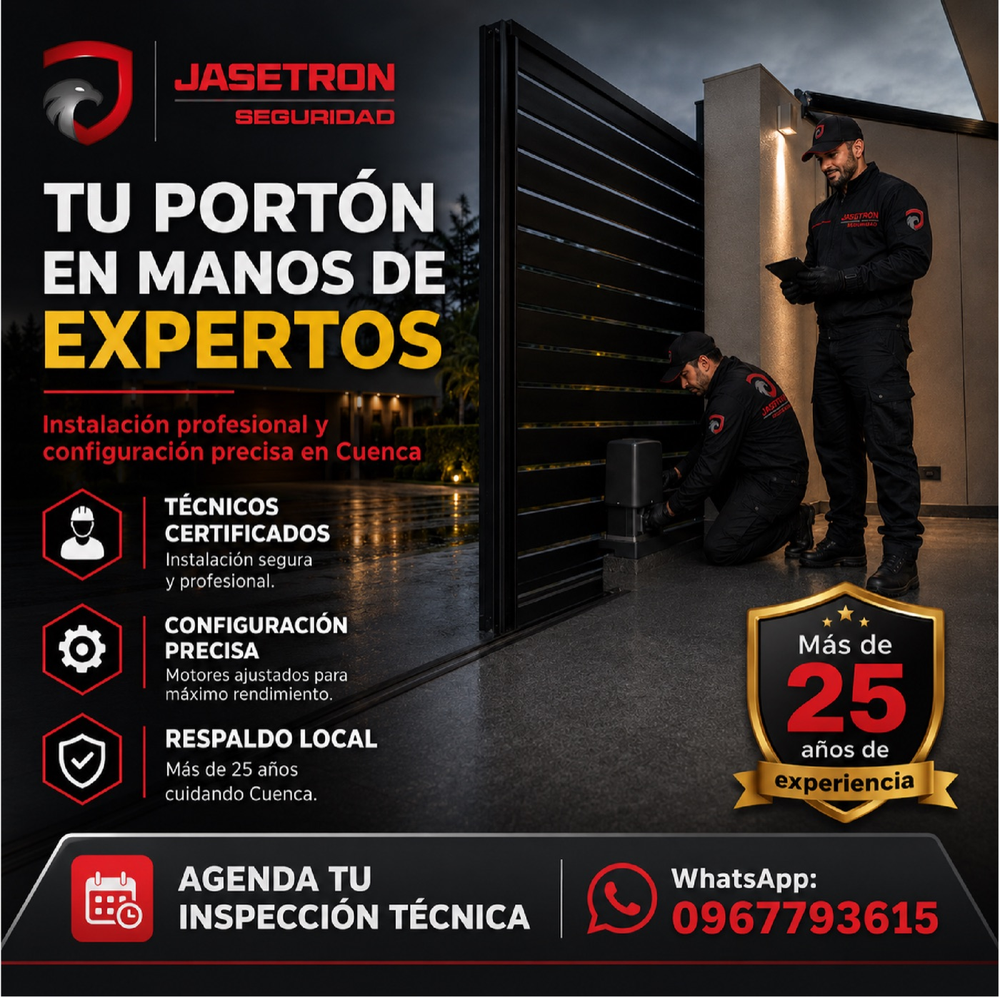

Jasetron Seguridad
Calendario de Publicaciones
Junio - Julio
Calendario de Publicaciones
Vamos con todo Ecuador
Hoy no es un partido cualquiera. Hoy la Tri disputa su partido inaugural en el Mundial 2026 y desde Cuenca nos unimos a esta emoción apoyando a nuestra selección en su debut frente a Costa de Marfil. En Jasetron celebramos la pasión, la unidad y el orgullo de ser ecuatorianos. Vamos con todo, Ecuador. Todos apoyamos a La Tri. 🇪🇨⚽ 📍 Ecuador vs Costa de Marfil 🕕 Hoy · 18:00 📲 Jasetron Seguridad WhatsApp: 0967793615 #VamosEcuador #LaTri #EcuadorVsCostaDeMarfil #Jasetron #Cuenca #OrgulloEcuatoriano
Rastreo Satelital - Día del Padre
¿Aún no sabes qué regalarle a papá en su día? Olvida las corbatas y las herramientas que nunca usa; este año, regálale el control total de lo que más valora. 🚗📱👔 Para el hombre que siempre ha sido el escudo de la familia, la verdadera tranquilidad es el mejor regalo. Con el sistema de Rastreo Satelital Premium de Jasetron, papá tendrá el control absoluto de su vehículo en la palma de su mano, 24/7. Desde nuestra App exclusiva, podrá monitorear rutas en tiempo real, apagar el motor a distancia ante cualquier emergencia y recibir alertas inmediatas si su auto se mueve sin autorización. Todo con el respaldo de nuestra Central de Monitoreo local en Cuenca y más de 25 años de trayectoria. Beneficios para Papá: * 📍 Localización exacta en tiempo real en todo el Ecuador. * 🛑 Apagado remoto del motor con un solo toque desde su celular. * 🔔 Alertas inteligentes por encendido no autorizado o exceso de velocidad. Demuéstrale cuánto te importa su seguridad. 👇 Aprovecha nuestra PROMOCIÓN EXCLUSIVA por el mes del Padre. ¡Cupos de instalación limitados! 📲 Escríbenos al WhatsApp: 0967793615 🔗 https://wa.me/593967793615 #DiaDelPadre #RegaloParaPapa #RastreoSatelital #GPSCuenca #SeguridadVehicular #Jasetron #CuencaEcuador #MasDe25Años #PapaSeguro
Apoyo a La Tri 2
La pasión se hereda, la fe sigue intacta y el apoyo a nuestra selección no se detiene. 🇪🇨⚽ Vive cada emoción del partido con tus hijos, con la tranquilidad absoluta de que tu hogar o negocio están vigilados por nuestro equipo 24/7. En Jasetron, llevamos más de 25 años siendo el escudo del Austro para que tú solo te preocupes por alentar a La Tri y pasar tiempo de calidad con tu familia. 👇 ¡Deja tu seguridad en manos de los expertos! 📲 WhatsApp: 0967793615 🔗 https://wa.me/593967793615 #LaTri #Ecuador #PasionPorElFutbol #SeguridadCuenca #Jasetron #MasDe25Años
Mes de Papá - Tecnología
Papá protege con el corazón, nosotros con tecnología. 🛡️👨👧👦 En el mes de papá, regálale la tranquilidad de saber que su familia y patrimonio están vigilados las 24 horas. Nuestro sistema de alarmas y cámaras de seguridad le permite tener el control total desde su celular, esté donde esté, respaldado por una Central de Monitoreo humana y real. 👇 Aprovecha nuestras promociones especiales por el mes del padre e instala seguridad de verdad: 📲 WhatsApp: 0967793615 🔗 https://wa.me/593967793615 #MesDePapa #RegaloParaPapa #SeguridadFamiliar #Jasetron #Cuenca #Proteccion247 #AlarmasInteligentes #Ecuador

Mantenimiento Preventivo
Un sistema automatizado caducado o sin mantenimiento es un riesgo latente para tu propiedad. ⚠️🛠️ Las emergencias no avisan. ¿Hace cuánto tiempo nadie revisa la operatividad de tus accesos o el estado de tus motores? Muchas personas cometen el error de instalar y "olvidarse". En Jasetron, sabemos que tu portón debe estar en manos de expertos para garantizar su máximo rendimiento y evitar bloqueos en momentos críticos. Contamos con técnicos certificados y más de 25 años de experiencia cuidando el Austro. Nosotros nos encargamos de auditar tus sistemas, realizar mantenimientos precisos y garantizar que tus accesos respondan al 100% cuando llegas a casa o a tu negocio. No esperes a un susto para descubrir una falla técnica. Profesionaliza tu seguridad. 👇 Solicita una auditoría de mantenimiento preventivo hoy: 📲 WhatsApp: 0967793615 🔗 https://wa.me/593967793615 #Jasetron #MantenimientoPreventivo #PortonesElectricos #Automatizacion #SeguridadCuenca #ProfesionalesEnSeguridad #MasDe25Años
Problema: Grabar no es reaccionar
Tener cámaras instaladas en casa no sirve de nada si nadie las vigila mientras tú trabajas o duermes. 📹❌ Grabar un robo no lo detiene. En Cuenca, muchas personas compran equipos por internet sintiendo que ya están seguras. Pero seamos honestos: en una emergencia real, recibir una simple notificación en tu celular no es suficiente para proteger a tu familia o tu negocio. En Jasetron, transformamos tu sistema pasivo en seguridad activa. ¡No tienes que comprar todo de nuevo! Nosotros enlazamos tus cámaras actuales a nuestra Central de Monitoreo local. Si ocurre un evento, un equipo de profesionales verifica la alerta y despacha asistencia inmediata por ti, las 24 horas del día. Beneficios del Plan Conecta: * ✅ Ahorro inteligente: Aprovecha al máximo la inversión en los equipos que ya compraste. * ✅ Respuesta real: Dejamos de ser simples observadores; despachamos a nuestras patrullas locales al instante. * ✅ Respaldo ininterrumpido: Monitoreo 24/7 operado desde Cuenca, para Cuenca, con más de 25 años de trayectoria. No te quedes solo mirando la pantalla de tu celular en una emergencia. Actúa hoy. 👇 Agenda un diagnóstico GRATUITO de compatibilidad para tus equipos aquí: 📲 WhatsApp: 0967793615 🔗 https://wa.me/593967793615 #JasetronConecta #SeguridadCuenca #Monitoreo247 #CamarasDeSeguridad #CCTVCuenca #MasDe25Años #SeguridadInteligente #Azuay
Solución: Ahorro e Integración
¿Compraste cámaras autogestionadas por internet y te sientes desprotegido? ¡No las deseches ni gastes miles en un sistema nuevo! ♻️🔌 En Cuenca, sabemos que muchos propietarios de hogares y negocios ya hicieron una inversión en equipos de seguridad que hoy solo les sirven para ver grabaciones tarde. Con nuestro plan Jasetron Conecta, te damos la solución comercial e ingenieril que estabas esperando: integramos y actualizamos tus sistemas actuales. No somos simples vendedores de hardware. Somos una empresa de servicios de seguridad local con más de 25 años de experiencia. Nuestro equipo técnico enlazará tus grabadores (DVR/NVR) o paneles de alarma existentes a nuestra Central de Monitoreo operativa las 24 horas, sin obligarte a comprar equipos nuevos. Paga solo un fee de activación y una mensualidad justa por tu tranquilidad real. Beneficios de la Integración con Jasetron: * ✅ Ahorro Garantizado: Evita la compra de costosos grabadores o cámaras de última generación. * ✅ Monitoreo Profesional: Tus equipos antiguos cobran vida nueva al estar vigilados por expertos locales. * ✅ Control desde tu App: Sigue gestionando todo desde tu celular, ahora con el respaldo de Jasetron. Aprovecha la inversión que ya hiciste y súmale la seguridad real de Jasetron. 👇 Agenda tu diagnóstico de compatibilidad técnico GRATUITO en tu domicilio o local aquí: 📲 WhatsApp: 0967793615 🔗 https://wa.me/593967793615 #JasetronConecta #AhorroSeguridad #IntegracionTecnica #SeguridadCuenca #Monitoreo247 #CamarasDeSeguridad #CCTVCuenca #MasDe25Años #Azuay #AustroEcuatoriano
Obligación Regulatoria Bomberos
El Benemérito Cuerpo de Bomberos de Cuenca es estricto con los permisos anuales, y la seguridad contra incendios no es un juego. 🔥🏢 ¿Sabías que una inspección fallida puede significar la clausura inmediata de tu local comercial, bodega u oficina? No arriesgues el esfuerzo de años por falta de una correcta gestión preventiva. En Jasetron, somos expertos en diseñar, instalar y certificar Sistemas Contra Incendio que cumplen con toda la normativa técnica y legal exigida en el Austro. Desde detectores de humo de alta precisión hasta paneles certificados y señalización, nuestro equipo se encarga de todo para que tú solo te preocupes por hacer crecer tu empresa. ¿Por qué elegir Jasetron para tu cumplimiento? * ✅ Ingeniería Certificada: Sistemas diseñados según normativas actuales de prevención. * ✅ Gestión sin complicaciones: Instalamos equipos de alta gama y preparamos tu sistema para superar cualquier inspección técnica. * ✅ Mantenimiento profesional: Documentación necesaria para tus trámites de funcionamiento anual. No dejes tu permiso de funcionamiento para el último minuto. Evita contratiempos y asegura la continuidad de tu negocio hoy. 👇 Agenda una visita de nuestros ingenieros para una evaluación sin costo aquí: 📲 WhatsApp: 0967793615 🔗 https://wa.me/593967793615 #Jasetron #BomberosCuenca #CumplimientoNormativo #SeguridadIndustrial #PrevencionIncendios #ContinuidadDeNegocio #EmpresaSegura #Cuenca #Azuay #SeguridadB2B
Continuidad de Negocio B2B
Gerente: ¿Cuánto le cuesta a tu empresa un solo día de operaciones detenido? 🏭📉 Un incendio menor, un robo hormiga o una falla en tus sistemas de seguridad puede paralizar tu producción por días, o peor aún, afectar la confianza de tus clientes. No dejes tu inversión a la suerte. En Jasetron, diseñamos sistemas integrales de seguridad industrial: Detección de incendios + Control de accesos + Monitoreo 24/7. No solo instalamos equipos, garantizamos la Continuidad de tu Negocio. Respaldo técnico local, inmediato y verificable en Cuenca. 👇 Agenda hoy una asesoría técnica con nuestros ingenieros y blinda tu empresa: 📲 WhatsApp: 0967793615 🔗 https://wa.me/593967793615 #Jasetron #SeguridadIndustrial #ContinuidadDeNegocio #B2B #EmpresaSegura #Cuenca #ProfesionalesEnSeguridad #MasDe25Años #ProtegeTuInversion
Automatización de Portones
¿Sigues bajándote del auto en plena lluvia o en la oscuridad para abrir tu portón manual? 🚗🌧️ Automatiza tu entrada con Jasetron. Instala motores de alto tráfico, silenciosos y sellados, diseñados especialmente para resistir el clima de Cuenca. Llega a casa, presiona un botón y entra seguro sin mojarte ni exponerte al peligro en la calle. ¡Tu comodidad y la tranquilidad de tu familia son nuestra prioridad! Cuenta con el respaldo local de quienes protegen la ciudad desde hace más de 25 años. 👇 Deja de arriesgarte y agenda tu inspección técnica gratuita: 📲 WhatsApp: 0967793615 🔗 https://wa.me/593967793615 #Automatizacion #PortonesElectricos #SeguridadCuenca #Jasetron #LluviaCuenca #SeguridadResidencial #ControlRemoto
Tranquilidad Adultos Mayores
Cuidar de quienes más nos cuidaron es nuestra mayor prioridad. 👵👴 Sabemos que no puedes estar con tus padres todo el día, pero nosotros sí. Diseñamos sistemas de seguridad residencial súper simples y efectivos. Con nuestras cámaras 360 y comunicación bidireccional, podrás monitorear y hablar con tus seres queridos desde donde estés. Además, con nuestros planes de monitoreo y asistencia local inmediata, ellos no tendrán que lidiar con tecnología complicada ante una emergencia. Su bienestar y tu tranquilidad van de la mano. 👇 ¡Pregunta por nuestra cámara gratis incluida en tu plan! Conoce nuestros paquetes para el adulto mayor: 📲 WhatsApp: 0967793615 🔗 https://wa.me/593967793615 #Jasetron #AdultoMayor #Independencia #SeguridadCuenca #Monitoreo247 #TranquilidadFamiliar #CuidadoDeLosPadres
Compañía y Asistencia 24/7
La tranquilidad no tiene precio, especialmente cuando se trata de tus padres o abuelos. 🤍👵👴 Sabemos que quisieras estar con ellos en todo momento, pero las responsabilidades a veces no lo permiten. En Jasetron, entendemos que para nuestros adultos mayores, la tecnología complicada es un obstáculo. Por eso, no les instalas una simple "alarma", les das compañía. Ante cualquier emergencia médica, de fuego o de intrusión, nuestro sistema los comunica de inmediato con nuestra Central de Monitoreo humana en Cuenca. Nosotros despachamos la ayuda necesaria y te notificamos al instante. Llevamos más de 25 años cuidando a las familias del Austro. 👇 Regálales el respaldo que necesitan y a ti, la paz mental que buscas. Agenda una asesoría gratuita a domicilio: 📲 WhatsApp: 0967793615 🔗 https://wa.me/593967793615 #Jasetron #AdultoMayor #Monitoreo247 #SeguridadFamiliar #Cuenca #Azuay #CuidadoDeLosPadres #TranquilidadMental #MasDe25Años #SeguridadResidencial